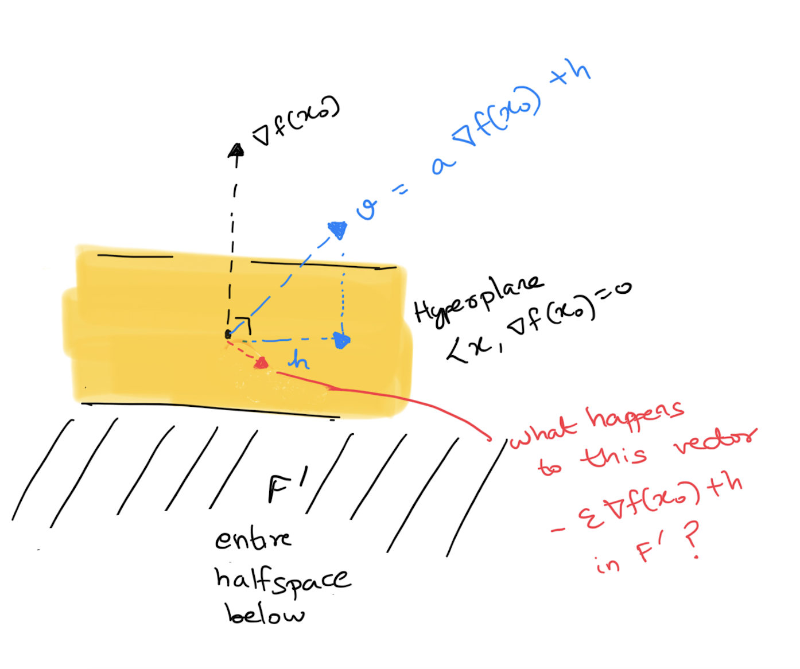
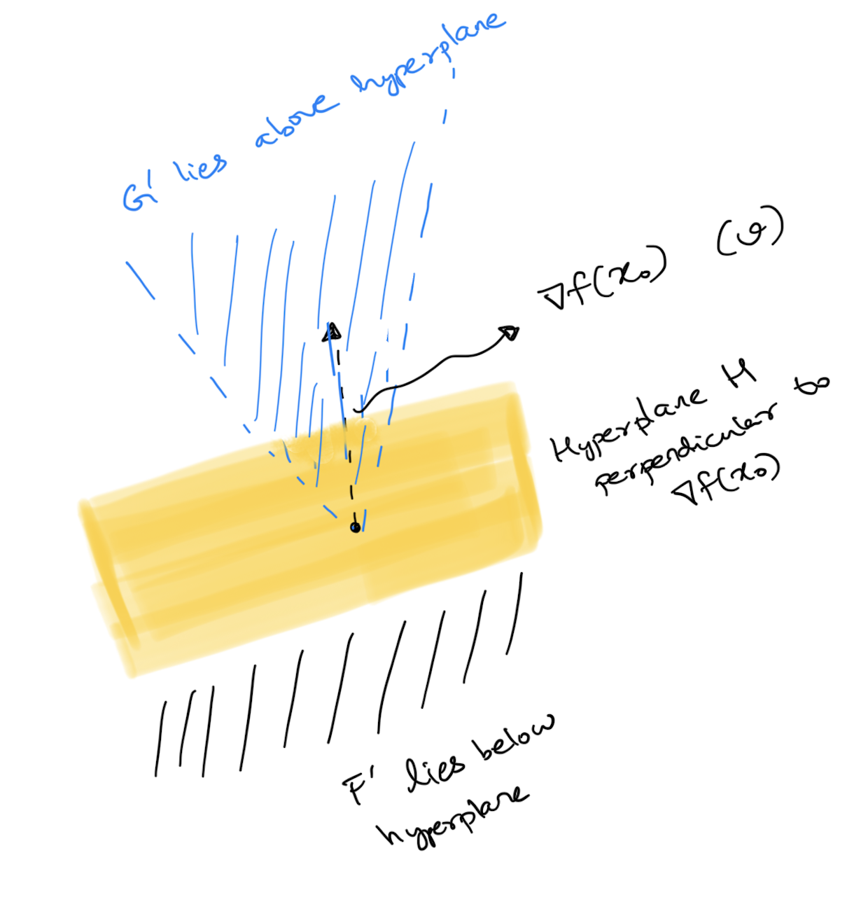

Karush–Kuhn–Tucker conditions
Reference: Foundations of optimization by Bazaraa and Shetty (link), Chapter 5
The optimization problem (A)
Minimize \(f(x)\) under the constraints \(x\in X\) and \(g_i(x) \leq 0\) for \(1\leq i\leq m\), where
- \(X\) is a subset of \(\mathbb{R}^n\)
- \(f,g_i\) are functions \(U\to\mathbb{R}\) for some open set \(U\supset X\)
Feasible set, feasible solutions and optimal solutions
- The set of points in \(\mathbb{R}^n\) which satisfy the constraints make up the feasible set \(S\)
- Any \(x\in S\) is called a feasible solution to (A)
- Any \(x^*\in S\) such that \(f(x^*)\) is minimum among \(\{f(x)\mid x\in S\}\) is called an optimal solution to (A)
Rephrasing optimality
In general, one would like to find optimal solutions to (A). Let’s rephrase what it means for \(x_0\in S\) to be optimal.
Set \(B = B(x_0)=\{x\in S \mid f(x)-f(x_0) < 0\}\). Clearly \(x_0\) is optimal exactly when \(B=\emptyset\). The idea then is to express \(B\) as an intersection \(F\cap G\cap X\) where:
- \(G=\cap G_i\) where \(G_i = \{x \mid g_i(x)\leq 0\}\) captures one portion of the constraints
- \(X\) captures the other portion of the constraints
- \(F=\{x \mid f(x)<f(x_0)\}\) captures all points which violate optimality of \(x_0\)
It is an easy check to see indeed that \(B=F\cap G\cap X\). Thus \(x_0\in S\) is optimal exactly when \(F\cap G\cap X\) is empty.
Necessary conditions for optimality
Since it is in general harder to find optimal solutions, let us focus on necessary conditions for optimality instead. Assuming \(x_0\in S\) is optimal, can we make some useful statements on \(F, G\) and \(X\) (apart from the fact that they exist)?
It turns out that we can! The following theorem assures us that we can find convex sets \(F', G', X'\) which are non intersecting which further turn out to be, in some sense, convex approximations of \(F,G,X\) at \(x_0\). To simplify discussion, let us additionally assume that we pick an optimal \(x_0\in S\) which also lies in the interior1 of \(X\). In this case \(X'\) is just the full euclidean space and can be taken out of the picture. We then have
We’ll take this theorem for granted and instead, focus on what it gives us.
Hyperplanes, half-spaces and convex cones
Let us investigate the geometry of \(F'\) and \(G'\). In particular can we deduce any connections between \(\nabla f(x_0)\) and \(\nabla g_i(x_0)\)s?
The vectors perpendicular to \(\nabla f(x_0)\), i.e. \(\{x \mid \langle x, \langle x, \nabla f(x_0) = 0\}\) form a hyperplane \(H\) and \(F'\) is just all vectors which lie on side of it. It is what is called a half-space.
Clearly if \(v\in F'\), then any positively scaled \(\lambda v, \lambda > 0\) also lies in \(F'\) (i.e. on the same side of the hyperplane) making \(F'\) a cone. As an exercise, check that any positive linear combination of vectors in \(F'\) also lie in \(F'\), which makes \(F'\) a convex cone.
\(G'\) is the intersection of such half spaces and also forms a convex cone.
Hyperplane separation
Since we have these non-intersecting convex sets \(F'\) and \(G'\), we can invoke the separation theorem to get a hyperplane which separates these two. Further since \(F'\) and \(G'\) are cones, the hyperplane must pass through the origin, i.e. are just vectors perpendicular to some \(v\)5.
Since \(F'\) is the entire halfspace below \(\nabla f(x_0)\), we can in fact show that \(v\) is just \(\nabla f(x_0)\) scaled6.

Thus \(H\) is indeed the hyperplane separating \(F'\) and \(G'\) with \(G'\) above and \(F'\) below. Hence vectors in \(G'\) (i.e any \(g'\) with \(\langle g', \nabla g_i(x_0) \rangle < 0\) for all \(i\in I\)) have to also satisfy \(\langle g', \nabla f(x_0) \rangle > 0\).

Hyperplane separation after a linear transformation
Translating back to algebra, this means the equation \(Ax < \bar{0}\)7 has no solution \(x\in \mathbb{R}^n\) where \[A = \begin{bmatrix} \nabla f(x_0) \\ \nabla g_{i_1}(x_0) \\ \vdots \\ \nabla g_{i_t}(x_0) \end{bmatrix} \in \mathrm{Mat}_{(|I|+1)\times n}(\mathbb{R})\]
That is, the image8 of \(A\) is disjoint from the convex cone \(K = \{y \in \mathbb{R}^{|I|+1} \mid y < \bar{0}\}\). We can once again play our hyperplane separation card and separate these convex sets \(\mathrm{Img}(A)\) and \(K\) in \(\mathbb{R}^{|I|+1}\) by a hyperplane \(H' = \{ x \mid \langle x, p \rangle = 0 \}\) for some non-zero vector \(p\).
Reconstructing the Fritz John conditions for optimality
Without loss of generality, assume \(K\) lies “below” the hyperplane, i.e. \(\langle k, p \rangle < 0\) for all \(k\in K\). Convince yourselves9 that this means \(p \geq \bar{0}\). And further the image of \(A\) lies “above” the hyperplane, i.e. \(\langle p, Ax \rangle \geq 0\)10 for all \(x\in \mathbb{R}^n\).
This means \(p^TAx = 0\) for all \(x\) in \(\mathbb{R}^n\), i.e \(p^TA\) or equivalently \(A^Tp\) is the \(0\) vector in \(\mathbb{R}^n\) !
\[\begin{bmatrix} \vert & \vert & & \vert \\ \nabla f(x_0) & \nabla g_{i_1}(x_0) & \dots & \nabla g_{i_t}(x_0) \\ \vert & \vert & & \vert \end{bmatrix} \begin{bmatrix} p_0 \\ p_{i_1} \\ \vdots \\ p_{i_t} \end{bmatrix} = \begin{bmatrix} 0 \\ 0 \\ \vdots \\ 0 \end{bmatrix}\]
This gives us,
To make this statement read cleaner (i.e get rid of the \(I\) set notation in the statement), let us also assume all the \(g_j\)s are differentiable at \(x_0\) and not just \(g_i\) for \(i\in I\). So \(\nabla g_j(x_0)\) exists for all \(j\). Simply set \(p_j = 0\) for all \(j\not\in I\) to get
Note:
- \(p_0\) is called the Lagrangian multiplier corresponding to the objective function \(f\) and \(p_i\), the Lagrangian multiplier corresponding to constraint \(g_i\).
- For the constraints, complementary slackness gives us that either the constraint condition \(g_i(x_0)\) is \(0\) or the corresponding Lagrangian multiplier \(p_i\) is \(0\).
- The Fritz John conditions allow \(p_0\) to be \(0\)
Karush–Kuhn–Tucker conditions (KKT)
The KKT conditions associated to (A) are basically the Fritz John conditions under the additional assumption that \(p_0\), the Langrange multiplier of \(f\) is non-zero. More precisely,
It should be clear that if \(x^*\) is indeed an optimal point for (A) and \(p_0\neq 0\), then it satisfies the KKT conditions. Conditions which try to force \(p_0\neq 0\) for \(x^*\) are called constraint qualifications, for instance demanding that \(\nabla(g_1)(x^*), \ldots, \nabla(g_m)(x^*)\) be linearly independent. Indeed if this were the case and \(x^*\) is optimal, Fritz-John’s stationarity equation will force \(p_0 \neq 0\).
KKT conditions are already interesting at this point as a test for optimality. Any \(x^*\) (with a constrain qualification) which fails to satisfy the KKT conditions will not be optimal. They are even more useful because under some additional assumptions on \(f\), and \(g_i\) they can actually guarantee optimality!
Footnotes
\(x_0\) lies in the interior of \(X\) if you can fit an open ball in \(\mathbb{R}^n\) around \(x_0\) so that the ball also lies inside \(X\).↩︎
Intuitively, the gradient \(\nabla f(x_0)\) points in the direction of steepest ascent of \(f\) at \(x_0\). So any \(x\) which makes a negative inner product with it is a direction of descent↩︎
Intuitively, since \(g_i(x_0)=0\), moving in a direction where \(\langle x, \nabla g_i(x_0)\rangle < 0\) ensures the constraint function decreases, keeping it \(\leq 0\). If \(g_j(x_0)\) is already \(<0\), moving a bit will not violate the constraint.↩︎
Intuitively, the theorem tells us there is no direction in which we can move from \(x_0\) which will keep the constraints but minimize \(f\) further↩︎
If the hyperplane looks like \(\{x \mid \langle x, v \rangle = c\}\) for some \(c\), and \(F'\) lies on one side of it, so say \(\langle f', v\rangle \geq c\) for all \(f'\in F'\). You can positively scale \(f'\) to make it break this inequality unless \(c\) is \(0\)↩︎
Say \(F'\) also lies below the hyperplane \(H\) defined by \(v\) and \(v = a \nabla f(x_0) + h\) where \(h\in H\). Since we want \(\langle f', v \rangle < 0\) for \(f'\in F\), using \(\langle f', \nabla f(x_0) \rangle < 0\) and \(\langle f', h \rangle =0\), we have \(a >0\). Now construct this problematic vector \(-\epsilon \nabla f(x_0) + h\) in \(F'\). It needs to lie below the hyperplane perpendicular to \(v\) for any \(\epsilon > 0\). We can make \(\epsilon\) tiny and nudge it above the hyperplane defined by \(v\)↩︎
i.e. every coordinate is \(<0\)↩︎
\(\{Ax\mid x\in\mathbb{R}^n\}\subset\mathbb{R}^{|I|+1}\)↩︎
Remember \(K\) has all the vectors \(k<\bar{0}\)↩︎
The \(\geq\) is because the Image of \(A\) can cease to be open↩︎
simply because \(p\) is not the \(\bar{0}\) vector↩︎
The reason why it is called dual feasibility will be a dual story for another time↩︎
Citation
@online{bhaskhar2021,
author = {Bhaskhar, Nivedita},
title = {Karush–Kuhn–Tucker Conditions},
date = {2021-09-10},
url = {https://nivbhaskhar.github.io/blog/posts/2021-09-10-kkt-conditions.html},
langid = {en}
}